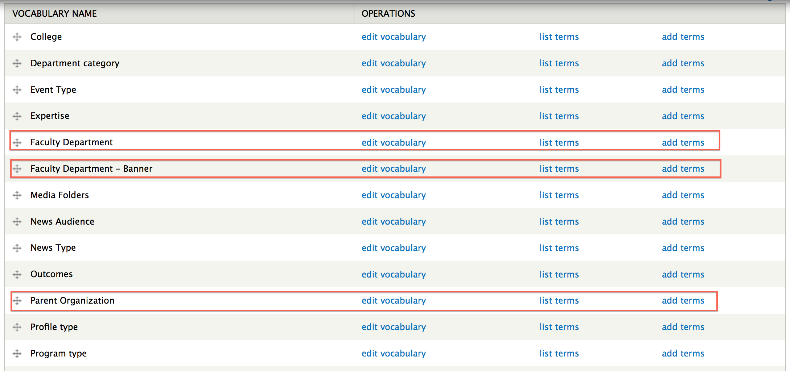
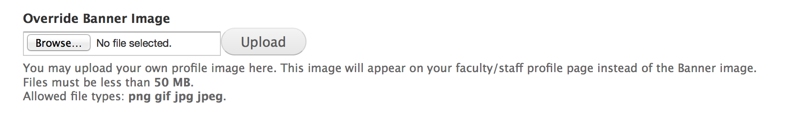
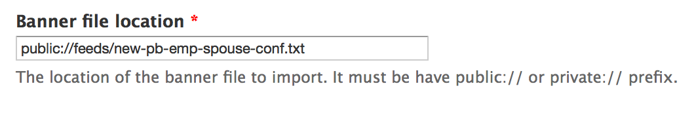
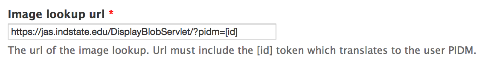
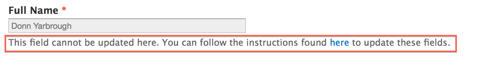
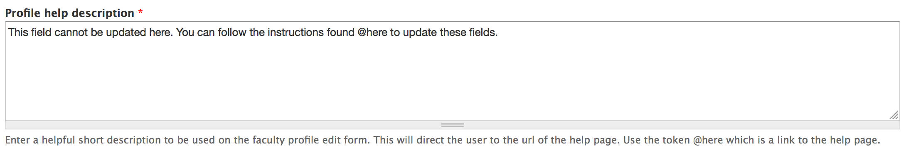
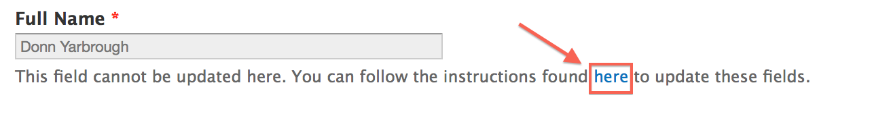
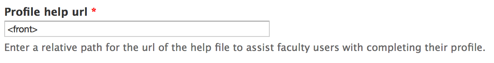

Home
Faculty/Staff Profiles - Administration
Updating Faculty Departments
There are three faculty taxonomies that affect faculty/staff profiles.
A link to each taxonomy can be found by navigating to http://cms.indstate.edu/admin/structure/taxonomy

Below are descriptions of each taxonomy and their intended purpose:
- Faculty Department - Banner
- Notice the word Banner in the taxonomy name. This is because these terms are the departments that come directly from Banner.
- Terms in this taxonomy are automatically created during the faculty/staff import. This is the term that is associated with each faculty/staff profile. It is hidden from view and cannot be updated because this information comes directly from the Banner import file.
- Inside this taxonomy are two additional fields which define a relationship to the taxonomies Faculty Department and Parent Organization.
- Faculty Department
- This is the English version of the Banner department. On the Faculty Department - Banner term, you can select the Faculty Department that the Banner department should relate to.
- This is the department that is displayed on Faculty/Staff profiles.
- This is a parent term of the Faculty Department - Banner which allows multiple Banner departments to share the same parent department. An example of this would be the Networks Financial Institute. It is a single department, but there are multiple Banner departments that make up this department. For example, NETWORKS, Networks-Research and Networks-Student Scholarships make up this department.
- Parent Organization
- This is the Parent Organization of the Faculty Department - Banner department. On the Faculty Department - Banner term, you can select the Parent Organization that the Banner department should relate to.
- This is also a parent term of the Faculty Department - Banner which serves to group Banner departments into colleges/organizations. This relationship was created to allow external sites, such as college sites, to query faculty/staff based on their college.
Updating Scenarios
- You want to update the name of an English version of a Banner department/You want to update the name of a Faculty Department
- You want to change the Faculty Department a Banner Department is associated with.
- You want to update the college associated with a Banner department.
Updating your Profile Image
If you have an adequate role, you can use an alternate image for your Faculty/Staff profile.
On the Update Faculty Profile page, scroll down below the normal Banner Image and you should have an option to add or update the Override Banner Image field.

Banner Import File
The Banner Import file holds data that will import nightly and create/update faculty/staff profiles. It is important that the website knows the name of this file so that imports will not be interrupted.
If the name of the file has changed, you will need to update it in the Faculty Settings which can be found by nagivating to the Faculty Settings Page

Image API URL
The Image API URL holds the web address that returns faculty/staff images for their respective profile.
If the web address changes, you will need to update it in the Faculty Settings which can be found by navigating to the Faculty Settings Page

Profile Help Description

You can update the message above by navigating to the Faculty Settings Page
and updating the Profile help description
Use the @here placeholder as a link to the Basic page that will hold instructions on how the faculty/staff can update their Banner information.

Profile Help URL

This is the link to the Basic page that holds instruction on how the faculty/staff can update their Banner information.

Created on March 06, 2014
Last modified on March 06, 2014
Authored by Gray Sadler